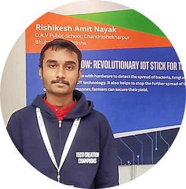

KISHAN KNOW
KISHAN KNOW-A REVOLUTIONARY DEVICE FOR THE FARMERS
INTRODUCTION
DESCRIPTION
- new method to detect the bacteria, fungi, virus attacks on a crop field using IOT and enabling the farmer to recognize to detect the faulty part of the crop and stop the further growth of it.
REASON TO THINK ON THIS
- When there occurs a crop failure it affects our GDP directly.
- Due to the suicide of the farmers due to these crop failure, human resource is depleting.
- The crop failure reduces the crop products available in the country and due to shortage, crops need to be imported.
MOTIVATION BEHIND SOLVING THIS PROBLEM

- I was practically motivated due to the fact that my grandfather was typically a farmer and I had saw him getting depressed when there is a crop failure, So I got deeper into the causes of crop failure and what could be done. Surprisingly I saw not in INDIA but across the globe is facing the situation..
WHAT IS THE MARKET VALUE OF THE PRODUCT?
can the product sustain in the present market scenario?
According to INDIAN COUNCIL FOR AGRICULTURAL TECHNOLOGY, GOVT OF India it requires just 4days for a bacteria to destroy the whole crop and according to a government research 80%reason for crop failure in India is due to outbreak of bacterial attack(not pests) and earlier NABARD (NATIONAL AGRICULTURAL BANK OF RURAL DEVELOPMENT), GOVT OF INDIA It is only institution of govt of India where people send the leaf samples for chemical test for bacterial attacks but they give the research data in 3-4weeks or 1month so by till then bacteria’s would have destroyed the whole crop field. We are doing the whole process in 12hours, detection of bacterial in which area of the field and what is solution to remove the bacterial affected part -this information or message is sent to the farmer's phone directly with the product price of rupees2200 so that it will be available to each and every farmer and its farmer friendly product as the product will be just a stick .
WHY AN INDIAN FARMER WILL USE THIS PRODUCT?
- 1. EASY TO USE/FARMER FRIENDLY PRODUCT-It will be just a IOT stick attached to a thermal camera which will be used by the farmer twice a day in the morning and in the evening such that they take a thermal imaging of the crop by moving out in some different cropping patterns so as to cover the most area. This is the work of farmer the rest over process is done using programming and technology at the Database .
- 2. UNEDUCATED FARMER CAN USE IT TOO!!!-As we are just providing the detection of bacteria in a crop field, along with the bacteria name, bacteria caused disease, temperature difference range if there is a bacteria attack or not.We are not saying any kind of technical process to the farmer to do just he/she has to use the thermal camera stick properly so as to capture images and the rest thing will be done by the already programmed module and sensors.
- 3. COST FRIENDLY FOR THE FARMERS –The total product cost will be Rupees 2200, affordable for a middle-class farmer too.
Comparison between KISHAN KNOW and other such similar IoT
- Point 1
-
KISHAN KNOW IS MUCH CHEAPER THAN OTHER IoT's. There are many products in the market to control pests and monitor them but those solution don’t work on a micro-level.
- Point 2
-
KISHAN KNOW FOCUS IS NOT PESTS ONLY.It focuses on the detection of all kinds of pests, bacteria, fungus, virus, etc.
- Point 3 3
-
KISHAN KNOW TARGETS THE WHOLE INDIAN MARKET NOT ONLY ONE SEGMENT OF SOCIETY.This will be a stick held by the farmers and a switch in that to click the images.Each and every farmer can use it across the country because of its low cost and feasability.
TECHNICAL ANALYSIS
SETUP 1
| Name | Description |
|---|---|
| GSM module- | to send or receive messages to the farmers those who don’t have android phones |
| GPS MODULE | to know the exact coordinates, helping the database in machine learning |
| THERMAL CAMERA | for thermal imaging with a precision of 0.01 degree celcius. |
| MICROPROCESSOR | to manage all the process |
| DATABASE WITH ML AND AI enabled | stores the data sent from the thermal camera and processess the images according to the programme set |
Alternate
| Name | Description |
|---|---|
| )RAINFALL SENSOR | detects rainfall in analogue values |
| MOISTURE SENSOR | detects soil moisture in analogue values |
| TEMPERATURE SENSOR | detects temperature in analogue valuesARDUINO MEGA-microcontroller |
| micro-controller | designed my own microcontrolller to make it cheap and make it work for required work only |
KISHAN KNOW
Kishan Know
A Device that would Change the
whole scenario of Agricultural
Sector of INDIA and the rest
of the WORLD.
VERSION 1.0
VERSION 2.0
VERSION 3.0
- © Rishikesh Amit Nayak
- Design: KISHAN KNOW